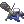
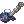

G1's Mediocre Rebellion Guide
 | |||||||||||||||||||
|---|---|---|---|---|---|---|---|---|---|---|---|---|---|---|---|---|---|---|---|
| Job Base: | |||||||||||||||||||
| Written By: | |||||||||||||||||||
| |||||||||||||||||||
Introduction
Hi hi! I noticed a lot of the Gunny/Rebel/Rebellion guides were all pretty outdated and was extremely bored so decided to make this "mini" guide for fun. This was supposed to be a small project but ended up being a huge undertaking. Hopefully this can help out aspiring Rebellion players and give you a good head start to reach Godhood. Before you proceed, please keep in mind that this is a combination of personal experience, information that was gathered from other players, and theory crafting so all information may not be 100% accurate. There is so much that has yet to be tested for this class which makes theory crafting quite fun. In addition, please note that this guide is specifically for the NovaRO/NovaRagnarok server and what is currently available on this server. There will definitely be differences when compared to other servers which may have gear that comes in future patches or will never be implemented in Nova. I highly recommend joining the Nova discord channel and joining the #gunslinger chat with any further questions or topics you want to discuss. With that said, let's start with a questionnaire~~
With the appearance of 4th classes in NovaRO, this guide will no longer be updated for Rebellions. However, please note that all the information is still relevant and is only missing the new attributes (just put everything in POW) and the new lvl 5 weapons and lvl 2 armors since Nova will continue to be releasing new items which will make it an endless cycle of updating for 3rd class skills that are dominated by the new 4th class skills. For anyone that wants to view Night Watch information, I made a basic reference guide on a separate wiki page: (G1's TL;DR Nightwatch Guide)
| Questionnaire to determine if Rebel is right for you | ||||||
|---|---|---|---|---|---|---|
| Enjoy going pew pew? | ||||||
| Tired of playing meta classes that everyone and their mother plays? | ||||||
| Remember the good ol days of desperado spamming? | ||||||
| Enjoy playing classes that others consider weak? | ||||||
| Want to waste a ton of zeny on ammo? | ||||||
| Like theory crafting builds that no one tested yet? | ||||||
| Want to play a ranged class but hate staying far back the whole time? | ||||||
| Hate going through the process of hitting level 99 and then starting over from 1 due to rebirth? | ||||||
| Want a class that you can start farming money immediately with minimal gear? | ||||||
| Want to channel your inner American? | ||||||
| Results of Questionnaire |
|---|
|
The answer to these questions don't actually matter. You should still play Rebellion.
|

Basic Rebel Overview
Simply put, Rebellion is a long range class (that sometimes feels like a melee class) with 50 billion different weapons and numerous skills that can only be used based on what weapon you equipped. As an extended class, you do not have the option to rebirth. So as a Novice, you can change to a Gunslinger at job level 10 and then choose Rebellion at base level 99 and job level 50.
Stats
- STR- Strength is situationally important. Rather than raising it up for the ATK which is quite minimal since Rebellions use ranged weapons, it serves a bigger purpose of increasing weight limit and also assisting with getting stat bonuses from certain equipment and cards (Ex: Temporal Boots of Strength and Gigantes Card).
- AGI- Agility is very important for skills that can be spammed such as Fire Dance, Banishing Buster (with Racing Caps) and Auto Attack builds to ensure you get the most DPS possible with the build you are using.
- VIT- Vitality is important because Rebellions are innately squishy and some skills require you to go into melee range which means you will need extra HP to survive long enough to deal tons of damage.
- INT- Intelligence is important since it raises your SP pool and some skills like Fire Dance and enchants like Hawk Eye eat up a ton of SP. Int is also used to achieve instant cast for skills with variable cast time requirements.
- DEX- Dexterity is the most important stat for Rebellions since this is how you increase your damage. Dex is also used to achieve instant cast for skills with variable cast time requirements.
- LUK- Luck is a definite requirement for Critical AA builds but not so much for the other builds. It does provide some ATK and Hit so putting some points into this is recommended even for non-critical builds but not a necessity. It is also situationally nice to get a total of 100 Luk for fighting monsters that can cast curse on you.
Sample Stat Build and Reasoning
- Fire Dance
- STR- 120 --> I'm using Temporal Boots of Strength, Brown Rat Card, and Gigantes Card which both need 120 STR for the bonuses
- AGI- 90+ --> For achieving max ASPD
- VIT- 60+ --> Survivability
- INT- 60+ --> More SP!
- DEX- 120 --> I don't want to go pew pew. I want to go PEW PEW.
- LUK- 90-100 --> More hit and ATK and also curse resistance
Important Skills (Not Including Prerequisites)
| First Job Skills | Type | Notes |
|---|---|---|
 Increasing Accuracy Increasing Accuracy
|
Active | Mini buff that provides 20 HIT, 4 DEX, and 4 AGI. Can't go wrong with that. In addition, this skill provides 25% DEF pierce in MH. |
 Single Action Single Action
|
Passive | Free 20 HIT and 5% ASPD is nice for Rebel builds. |
 Chain Action Chain Action
|
Passive | Enables chance of Double Attack for pistols which will allow you to use Quick Draw Shot (2nd Class Skill). Putting points into this skill also grants bonus stats if using Gunslinger Onyx [L] costume stone. |
 Adjustment Adjustment
|
Active | Raises FLEE, reduces long range physical damage taken, and reduces HIT. This isn't the greatest skill but using this in places where you might get 1 shot could be a life saver. |
 Madness Canceller Madness Canceller
|
Active | Raises ASPD and ATK. Useless in a normal PVM setting since it cannot be used at the same time as other buffs but the change at MH had removed this restriction making it a good buff for additional damage. Just remember that you are stuck in place so you will need to deactivate it every time you need to move. |
 Magical Bullet Magical Bullet
|
Active | Adds MATK to your attack. A bad skill in a normal PVM setting aside for Auto Attack builds but the MH change resulted in this skill granting 3% Ranged Damage so not too shabby anymore. |
| Snake Eyes | Passive | Increases HIT and Range for Pistol. One massive thing to note is... the level of Snake Eyes also increases DEF pierce if you have Gunslinger Shadow Armguard which is really important. Putting points into this skill also grants bonus stats if using Gunslinger Onyx [U] costume stone. |
| Second Job Skills | Type | Notes |
|---|---|---|
 Rich's Coin Rich's Coin
|
Active | Very important skill that takes a little bit of your zeny to create floating balls of zeny. Allows you to use your important buff skills that have coin requirements. |
 Platinum Altar Platinum Altar
|
Active | Provides both ATK and a shield. Requires you to use a Holy-element bullet but this restriction is removed in MH. This restriction isn't really an issue since you can just use converters to override the Holy-element. In addition, this skill cannot be used together with Madness Canceller or Heat Barrel BUT this restriction is also removed in MH. This skill also grants 25% DEF pierce in PVP which is a great buff for Rebels since tanky people have a ton of DEF. |
 Heat Barrel Heat Barrel
|
Active | Provides both ATK and ASPD but sacrifices HIT. This skill cannot be used together with Madness Canceller or Platinum Altar BUT this restriction is also removed in MH. Decent skill for Auto Attack builds but Platinum Altar is typically the better skill to use since you can only choose to use one of the two since big downside of Heat Barrel is that the cooldown is longer than the duration so there is downtime and if you die while the skill is active, you will have to wait the whole cooldown before being able to use again. |
 Bound Trap and Bound Trap and  Flicker Flicker
|
Active | Spawn a trap on the ground that slows monsters that go over it. This is the only CC skill a Rebel has that can be used for kiting monsters. Can use Flicker to explode the trap for additional damage. |
 Fallen Angel Fallen Angel
|
Active | A budget Body Relocation/Snap skill similar to the Sura skill. It allows for quick movement but eats up a coin which means you cannot do it forever without doing Rich's Coin again. The skill requires you to have a Revolver equipped in regular PVM settings but there are no weapon or coin restrictions in PVP. |
 Shattering Storm Shattering Storm
|
Active | Shotgun Skill. AoE damage skill that can break headgears. Not really used much in PVM unless you have a Racing Cap for boosting Banishing Buster damage. This skill has fixed cast time so some FCT gear is required for faster cast. This skill has been buffed in PVP by reducing FCT to 0.7 seconds which means instant cast is possible in PVP (There is an FCT cap for PVP at 0.7 seconds). |
 Banishing Buster Banishing Buster
|
Active | Shotgun Skill. Single target skill that deals a lot of damage and has a dispelling effect. The cooldown for this skill prevents spamming but Racing Caps with level 3 enchants allow you to spam this skill. This skill has fixed cast time so some FCT gear is required for faster cast. With Racing Caps, this has become the strongest single target DPS skill that Rebels have. |
 Slug Shot Slug Shot
|
Active | Shotgun Skill. Huge single target burst skill that is a forced neutral attack and has a fairly long cooldown. Requires a special type of ammo (Slugs) that does more damage based on weight of ammo. Slugs do not have to be equipped and just needs to stay in inventory. This skill has fixed cast time so some FCT gear is required for faster cast. This skill has been buffed in PVP by reducing FCT to 0.7 seconds which means instant cast is possible in PVP (There is an FCT cap for PVP at 0.7 seconds) and the skill can also be endowed so it is no longer neutral in PVP. |
 Anti-Material Blast Anti-Material Blast
|
Active | Rifle Skill. Single target skill that lowers target's player resistance so it is clearly more of a PVP skill. This skill has fixed cast time so some FCT gear is required for faster cast. This skill has been buffed in PVP by making the % chance of reducing resistance to 100%. However, the required FCT for instant cast is 1 second so instant cast is not possible in PVP (There is an FCT cap for PVP at 0.7 seconds). This skill also applies Crimson Marker in PVP. |
 Hammer of God Hammer of God
|
Active | Rifle Skill. Single target skill that eats up all your coins to do 1 big burst. Extremely high cooldown so should be used when available and then you should swap to a build with more consistent damage. Use with Crimson Marker for additional damage. It is possible to lower the cooldown to 1 second but since it requires coins which has a 3 second cooldown, need to make sure your Hammer of God cooldown is 3 seconds at least for "optimal" spam. |
 Fire Dance Fire Dance
|
Active | Pistol Skill. Close-range AoE skill and is the best DPS AoE skill for Rebellions. Think of it as a better version of Gunslinger's Desperado skill. Requires you to get close to a target but the constant damage is high since it is spammable. Make sure to get enough ASPD and After Cast Delay. |
 Dragon Tail Dragon Tail
|
Active | Grenade Launcher Skill. Single target skill that covers a very small AoE around target. Use with Crimson Marker for additional damage on specific monster. If you target a monsters with Crimson Marker, the bonus damage increase applies to all nearby monsters with no mark. |
 Round Trip Round Trip
|
Active | Gatling Gun Skill. Huge AoE skill that can be used in both the early, mid, and late game. Great for mobbing safely since it pushes enemies back. No need for ASPD or After Cast Delay. Not ideal for high HP targets. |
| Crimson Marker | Active | Marks a target which not only shows them on your map but increases damage for Quick Draw Shot, Hammer of God, and Dragon Tail. |
 Quick Draw Shot Quick Draw Shot
|
Active | You can activate this skill when Chain Action activates to shoot an additional bullet for every 20 job levels. If a Crimson Marker target is nearby, you shoot ANOTHER 2 bullets on top of it. This is your main source of damage with critical AA builds. Use Turbo to spam this skill so your fingers don't get destroyed. |
 Eternal Chain Eternal Chain
|
Active | Buff skill that allows you to use Chain Action with non-Pistol weapons which means you can use Quick Draw Shot with other weapons for ultimate PEW PEWing. |
Common Questions
- I just started playing RO, should I play Rebellion?
- Take the Questionnaire in the Introduction section.
- Will I be able to do Weeklies as a Rebellion?
- A majority of the weeklies CAN be done but you may come into issues for Bio5, Monster Hunter, and some high end instances such as Edda Biolabs if you are not fully geared. I highly recommend you find a guild or group to play with that can help with those things and make up for the weaknesses that Rebellions have.
- So many builds to choose from. What should I choose?
- With the appearance of OGH Challenge Mode, I currently recommend focusing primarily on Round Trip and then shifting over to Fire Dance if you fight monsters with large HP pools and are unable to be killed in 2-3 Round Trips. You can focus on other skills as fun side projects to use such as Banishing Buster after Fire Dance and Round Trip are complete.
- Where do I buy bullets/cartridges/slugs/missiles/traps/etc.?
- Go to Main Office by typing "@go main" and buy from Ammunitions Expert NPC. Make sure to use a Merchant-class with lvl 10 Discount skill to lower the price of each cartridge.
- Where can I find out more information about Rebellion that isn't included in this guide?
- Go to NovaRO's site, join the discord channel, and select Gunslinger icon in "#class-selector" to join the chat and ask questions.
- Where can I get some of the equipment you listed in the "Other Stuff (Rest of Your Gear)" section?
- Sorry about that. That would take me 50 years to list each one. Using @mi (monster name), @wd (item name), and Google will be your best friend for that.
- Hawk Eye & Thousand Bow combo or Bear's Might & Strong combo? What about Automatic Modules in Automatic Leg?
- This is more of a personal preference and other factors such as your budget and what you are farming. BM/Strong combo has more consistent damage but is much more expensive. HE/TB combo can result in higher burst when HE procs but results in running out of SP really quick unless you are in MH. Some people don't see a problem with the SP but it can be a deal breaker for others. Automatic Modules is right in the middle of both. It does more damage than BM/Strong combo and does less damage HE/TB combo BUT no SP drain when it procs. Scroll to "Weapon/Gear/Card Comparisons" section of guide for the numbers.
- Powerful Nives or Dextrous Nives for Illusion Hot-blood Headband? Power or Shooter Modules for Illusion Armor? Power or Skill Modules (like Des Hammer Dance) for Automatic Armor?
- Powerful Nives
- Power Modules
- Situational. Your results will vary depending on the rest of your build since if you have too much skill % modifier, it can make skill modules less effective and barely be a difference
- How can I use different elements if I want to use Platinum Altar which requires Holy bullets?
- You can use elemental converters to override the holy element and use the element you need.
- Can Temporal Circlets be used for non-RT builds? What enchants are best?
- Yes but not sure about all builds. The "best" enchants will require you to do some testing but when I tested Mettle 5 with Str Jewel Lvl 3 for Fire Dance, Circlet beat Illusion Hot-blood Headband in terms of damage. My results are in "Weapon/Gear/Card Comparisons" section of guide but your results may vary.
- Can I ask you specific questions about this guide or Rebellions?
- Not playing as much anymore so would recommend using the gunslinger discord channel for any questions about the guide.
Pros and Cons
Like with most things in life, there are pros and cons to playing a Rebellion. This is not a perfect list but here are some off the top of my head:
Pros
- Easiest and cheapest class to gear to farm zeny at Gefenia
- Has multiple skills that can mob
- No need to worry about reflect
- Able to use a variety of different builds due to the different types of weapons that are available
- Can easily change element of attacks by swapping ammo or using converters
- Above average in Monster Hunter instance as a DPS character when geared
- Can still run majority of content in the game despite being labeled as "weak"
- Decent mobility thanks to Fallen Angel
- Hasn't been fully tested yet so room for improvement and theory crafting rather than everyone having the same build
- BiS weapons and Automatic Skill Modules are relatively cheap when compared to other classes
- Bragging rights for not being a meta slave
Cons
- Not the most efficient class for Gefenia farming (compared to Genetics/Mech)
- Low HP pool
- Struggles with late game instances and monsters that have Agi-Up due to lack of strong critical attacks
- Expensive to gear to late game when same investment on a meta class is 10x stronger in many cases
- Difficult to find a weapon with the enchants and refine you want at times so you will need to enchant or refine on your own
- Some class specific cards are extremely difficult to find or even buy (Ex: Sweetie and Captain Ferlock Card)
- Similar to any other class that uses in which you will need to constantly carry bullets/cartridges/slugs/etc.
- Not as easy to get into random parties
The Different Builds
Fire Dance
A Revolver-only skill that requires you to get close before unloading bullets onto your target with consistent damage. This is an AoE skill so you are able to attack multiple monsters at the same time. Unlike the Gunslinger skill Desperado which is very similar but much weaker, the random aspect of your damage is gone so it is a great skill to do consistent damage over time. This build can be combined with Fallen Angel since it is a Revolver skill so you can move around with ease and position properly to either fight or flee from a target. This is currently the strongest AoE skill that Rebellions can use in a PVM setting to do damage over a long period of time such as against high-end MVPs, high HP normal monsters, and greater monsters at Monster Hunter. In order to do consistent damage, high ASPD and 72% After Cast Delay is needed to be able to spam the skill (only 60% ACD is required in MH due to skill spam limitations). You will also need to use potions or leech gear since this skill eats up a lot of SP and requires getting close to a monster. This skill does NOT crit so you will struggle against targets that use Agi-Up. For players that want the strongest DPS skill to complete instances and do content with High HP monsters or targets difficult to kill in a few hits, Fire Dance is the recommended skill to use.
| Pros/Cons/Things to Focus on/Tips |
|---|
Pros
Cons
Key Things to Focus on
Tips
|
Round Trip
A large AoE skill that requires a Gatling gun and is centered around the player that will knock back all enemies (excluding monsters that cannot be knocked back such as MVPs). If the target gets pushed into a wall, they take additional damage. For the monsters that cannot be pushed back, they will still take the additional damage when hit by Round Trip. With the appearance of Temporal Circlets, Automatic equipment, and 17.2 card set (Greater Bellare+Papilla+Boiling Swordfish), this skill has reached another level and is now good in the early, mid, and late game. Round Trip playstyle is very simple: run up or teleport to your target and go PEW. This skill is best when you are fighting in a place where you can 1-3 shot a monster.
| Pros/Cons/Things to Focus on/Tips |
|---|
Pros
Cons
Key Things to Focus on
Tips
|
Slug Shot
A Shotgun skill whose main goal is to attempt a 1 shot by doing huge single target burst with a special ammunition known as a Slug. You do not have to equip the Slugs since as long as it is in your inventory, they can be used. The heavier the weight of the Slugs, the higher your damage will be. One important thing to note is that the element of this skill is ALWAYS neutral which can be a detriment against certain monsters (There is a custom change ONLY in PVP that allows you to change element). In addition, this skill has a Fixed Cast Time of 1 second which means you will need FCT gear or it will take too long to cast (FCT requirement reduced to 0.7 seconds in PVP). This skill can be used in PVM but is not the greatest since it cannot be spammed but could potentially one shot a variety of lower end MVPs from afar. It is a pretty strong skill in PVP but is not that amazing since it cannot be spammed.
| Pros/Cons/Things to Focus on/Tips |
|---|
Pros
Cons
Key Things to Focus on
Tips
|
Banishing Buster
Another strong single target Shotgun skill that has an added bonus of being able to debuff an enemy. The ATK % ratio is much lower than Slug Shot making it deal less burst damage but the cooldown and FCT is much lower (cooldown is 1.6 seconds and FCT is 0.7 seconds). This means less FCT gear is required and it is slightly easier to spam. NovaRO has implemented both Temporal Circlets and Racing Caps which benefits Banishing Buster greatly. Temporal Circlets does not lower cooldown but increases damage by a large amount. On the other hand, Racing Cap allows you to decrease the cooldown by 1.5 seconds which means Fire Dance is no longer the only spammable skill that can be cast. It is up to you on if you want to prioritize burst or spam. If you want to spam with Racing Caps, you will need 193 aspd, .7 sec FCT, 65% ACD, and 100% VCT for max spam. Based on my testing, Banishing Buster surpasses single target DPS when compared to Fire Dance.
| Pros/Cons/Things to Focus on/Tips |
|---|
Pros
Cons
Key Things to Focus on
Tips
|
Shattering Storm
The last Shotgun skill that I will cover. It has lower ATK % ratios compared to Slug Shot and Banishing Buster but the key thing to note is that this can destroy headgears. Unfortunately, monsters don't really care about that effect at all. The 2 second cooldown is pretty rough to deal with but it can be reduced to 1 second thanks to the new Lust Shatter weapon which means it is slightly more spammable than Banishing Buster (if no Racing Cap). Since it is an AoE skill though, this will be your own ticket to fighting big mobs in between cooldowns for your other Shotgun skills. Similar to Slug Shot, it has 1 second FCT.
| Pros/Cons/Things to Focus on/Tips |
|---|
Pros
Cons
Key Things to Focus on
Tips
|
Hammer of God
This is a Rifle skill that is a single target burst with an obnoxious cooldown of a ridiculous 20 whole seconds. It's an extremely simple skill, you target an enemy and it goes boom. Thanks to the new 17.2 weapon (Lust Pointer), you are able to reduce the cooldown by 7 seconds to make it 13 seconds. +8 Racing Cap will allow you to reduce it by another 10 seconds to make it 3 seconds. There is shadow gear to lower this to 1 second but there is no point since the skill requires coins to fire and Rich's Coin has a 3 second cooldown so you are unable to cast another Hammer of God until you summon coins. Simply put, this is a pretty memey build and cannot be used as a main damage skill but can be used to start a fight before swapping to a different build/weapon to deal actual damage. This is one of the three skills that will have their damage increased if you use Crimson Marker.
| Pros/Cons/Things to Focus on/Tips |
|---|
Pros
Cons
Key Things to Focus on
Tips
|
Anti-Material Blast
Another Rifle Skill but this one screams "I am a PVP skill." This has 5 seconds cooldown which makes it slightly more spammable than some of the other Rebel skills but the main feature of this skill is that it lowers a target's demi-human resistance. In other words, the thing that makes it good is completely useless for PVM since monsters do not have any demi-human resistance. Unlike the other Rebel builds, there's only one weapon choice that have the skill modifier for this skill. If you do plan on using this skill, make sure to account for the 1 second FCT. My best piece of advice: Don't use this outside of PVP. This is an amazing skill against tanky players that you are unable to one shot. Do note that PVP modes have a 0.7 second FCT cap so instant cast is not possible so you will have to use Fallen Angel wisely and find good timing to use the skill. In addition, keeping a low weight is very important in PVP and damage of Anti-Material Blast is irrelevant so just use an unrefined Glorious Rifle which has 0 weight.
| Pros/Cons/Things to Focus on/Tips |
|---|
Pros
Cons
Key Things to Focus on
Tips
|
Dragon Tail
Dragon Tail is the only Grenade Launcher skill covered in this guide. Similar to how you carry Slugs for Slug Shot, this skill requires you to carry Dragon Tail Missiles in your inventory to use. This skill only has a VCT requirement (ACD requirement only with Racing Caps). It also has a 3.5 second cooldown which can only be reduced via Racing Caps and some of the weapons. You select a single target to attack with this skill but there is a mini AoE around your target so if there are a bunch of monsters, they will all be hit. This is one of the three skills that will have their damage increased if you use Crimson Marker. Hitting a Crimson Marked target will apply the damage bonus to the other monsters nearby your target. Overall, it is a pretty mediocre skill that can be spammed faster than something like Hammer of God and Slug Shot but gets overshadowed by other skills such as Round Trip and Fire Dance. Not sure if any other gear show up in the future to reduce this cooldown further but the lowest that is currently achievable on NovaRO is 0.5 seconds (3.5 base cooldown - 2 seconds from Racing Cap - 1 second from Patent Golden Lord Launcher/Golden Lord Launcher/Lust Boom). Since there is a slight ACD, you will need 50% ACD via your gear to have Dragon Tail spam be at 2 per second.
| Pros/Cons/Things to Focus on/Tips |
|---|
Pros
Cons
Key Things to Focus on
Tips
|
Critical/QDS Auto Attack
This build can be used with any weapon that can be equipped by a Gunslinger and consists of dishing out constant damage via auto attacks and Quick Draw Shot. While QDS will be the brunt of your damage, this skill requires Chain Action to proc first before it can be activated. This is why a critical build is required to maximize your damage. QDS does not crit but your regular attacks and Chain Action attacks can crit which is why it is important to ensure you are hitting critical strikes which deal 40% more damage than regular attacks in Renewal. For example, if your regular attack does 100 damage and QDS does 400 damage, then you will do 500 damage total. However, that means a critical attack would do 140 damage so your total will be 540 damage. This is why you should still focus on stats to increase QDS as much as possible but still make sure your critical rate is high enough to ensure your other attacks are coming out as crit. The 3 main requirements is to get 193 aspd, around 120 critical rate, and Turbo activated for QDS. Then you will be able to left click an enemy and hold down your QDS hotkey for some crazy pew pew. This is one of the three skills that will have their damage increased if you use Crimson Marker.
| Pros/Cons/Things to Focus on/Tips |
|---|
Pros
Cons
Key Things to Focus on
Tips
|
Magical Auto Attack
A meme build that is possible due to the appearance of one weapon that casts Soul Strike and Soul Expansion while auto attacking. Try to reach max ASPD of 193 and get other gear to autocast even more magical skills or use gear to boost Soul Expansion damage. It is technically the only other build aside from critical AA that can be used against monsters that use Agi-Up. Is it worth it to build? If you have the funds, kinda... but for the average person, I recommend focusing on other builds if your goal is to complete content. Definitely a fun-looking and interesting build but don't expect it to be a god-tier build. There are a variety of ways of building such as getting as many different autocast skills as possible via different cards and gear or investing in raising ghost-property modifiers to boost the basic skills from your weapon.
| Pros/Cons/Things to Focus on/Tips |
|---|
Pros
Cons
Key Things to Focus on
Tips
|
Weapons For Each Build
Not a complete list since I didn't want to list every single gun possible but these are the main ones that you should focus on along with some interesting ones that require some further testing. I also included some budget options that can be used for lower level players. For specific testing results, please go to "Weapon/Gear/Card Comparisons" section of this guide where I put my in-game test results.
Fire Dance
| Item | Way to Obtain or Buy | Cards | Notes |
|---|---|---|---|
 Bolt Revolver [2] Bolt Revolver [2]
|
Gambling with Dynite |  Sweetie Card Sweetie Card
|
If you plan to do Fire Dance, this weapon wins and nothing even comes close. Not too expensive compared to some of the more popular Einbech 3 weapons but since there aren't many players that enchant this weapon, you will have to enchant on your own unless you find one you like for sale. Enchanting can be a nightmare and extremely expensive. 2 Sweeties are best but extremely hard to obtain so 2 Bellares are also really solid choices without breaking your bank. Don't be discouraged if you can't afford a Sweetie, the SP penalty is a nightmare to deal with without leech gear. You can also use Contaminated Wanderer cards if your weapon is not +10 or higher. |
 Patent Crimson Rose [2] Patent Crimson Rose [2]
|
Ancient Juperos Quest | Sweetie Card
|
Newest Fire Dance-related weapon that was implemented in NovaRO but hard to say it is better than Bolt Revolver. This weapon forces you to use Heat Barrel for full effect and loses in the ACD department which means you will have to sacrifice your gear elsewhere to get the necessary ACD. |
| Illusion Gold Lux [2] | Illusion Gear Quest | Sweetie Card
|
A much more budget option that can be used at a lower level. Big downside of this is lack of After Cast Delay which you will need to properly spam in the later stages. It is probably the easiest to refine thanks to the Illusion dungeon changes due to the appearance of refine boxes. Overall it's not an awful Revolver since you can test your luck to get 4 enchants but the lack of ACD is definitely a heart breaker. This can be considered a decent starter Fire Dance weapon. |
| Paradise Rebellion Revolver [0] | Register for Group to Obtain Paradise Gear | No Slot | Nova has updated the Eden Group registration to provide a free Revolver with tons of great stats and is usable at lvl 100. In terms of base stats, it provides some Atk % and Ranged % but as you get higher and higher levels, you unlock bonus stats such as Fire Dance modifier and size %. Most importantly, it provides some ACD which means that if you have use the full Paradise set, you can have a total of 30% ACD for free which can be boosted to 60% with Bragi which makes Fire Dance much more doable for early game players now. Highly recommended for new players until they can get ahold of a Bolt Revolver. |


Round Trip
| Item | Way to Obtain or Buy | Cards | Notes |
|---|---|---|---|
 Patent The Black [2] Patent The Black [2]
|
Ancient Juperos Quest |  Greater Bellare Card Greater Bellare Card
|
This is the best weapon for Round Trip. As you refine it more, it gives a ton of different bonuses and can be enchanted to make it even stronger. Greater Bellare card is part of the new 17.2 card set with Papilla Card and Boiling Sword Fish Card to make Round Trip even stronger. One downside of this weapon is that it is rarely sold so you will need to craft, refine, and enchant on your own. If the weapon is not +10 or higher, a Contaminated Wanderer card is recommended over the Greater Bellare Card. |
 The Black [2] The Black [2]
|
Ancient Hero Quest | Greater Bellare Card
|
Basically the same as Patent The Black but worse. It's still a very solid weapon for newer players that can be used starting at Base Level 100 but would recommend upgrading to the Patent version if possible. |
 Calf Diamondback [2] Calf Diamondback [2]
|
Elite Buffalo Bandit M | Greater Bellare Card
|
Solid gatling gun that was used before people started testing with The Black. The nice thing about this weapon is that there is no need to get a headache with enchants and it is easier to obtain. Based on my testing, there is a noticeable difference between a +15 The Black with good enchants and +15 Calf Diamondback (Almost a 20-26% difference or potentially more depending on your enchants). I personally recommend you aim for The Black and Patent The Black instead of Calf Diamondback. |
| Paradise Rebellion Gatling Gun [0] | Register for Group to Obtain Paradise Gear | No Slot | Nova has updated the Eden Group registration to provide a free Gatling Gun with tons of great stats and is usable at lvl 100. In terms of base stats, it provides some Atk % and Ranged % but as you get higher and higher levels, you unlock bonus stats such as Round Trip/Fire Rain modifier, more ranged %, and even size %. Highly recommended for new players to use until they can transition to a refined The Black or Patent The Black. |
|  Tempest [0] | Ammunition's Expert NPC at Main Office 1st Floor | No Slot | This is an easy-to-obtain weapon since you can just buy from an NPC. REMEMBER TO USE A MERCHANT CLASS TO BUY FOR CHEAPER. Would recommend you consider the Paradise Rebellion Gatling Gun instead of these NPC weapons since it is free. |
|  Mini Mei [2] | Ammunition's Expert NPC at Main Office 1st Floor | Greater Bellare Card
|
Same as above. |
 Butcher [0] Butcher [0]
|
Panzer Goblin, Chaotic Killer Mantis, and Gemini-S58 | Greater Bellare Card
|
This was once the cheapest Gatling Gun for new players to aim for but with the update to Paradise equipment, it is recommended that you consider the Paradise Rebellion Gatling Gun instead of this since it is free and provides much better stats. |
| Lust Crusher [2] | Greater Ruba Papilla | Greater Bellare Card???
|
This weapon focuses on both Fire Rain and Round Trip but is overall pretty lackluster. Even with decent enchants and the bonus after using Fire Rain, it is weaker than a Calf Diamondback. You can check "Weapon/Gear/Card Comparisons" of the guide to see the difference. |

Slug Shot
| Item | Way to Obtain or Buy | Cards | Notes |
|---|---|---|---|
| Lust Shatter [2] | Greater Cae Papilla |  Contaminated Wanderer Card Contaminated Wanderer Card
|
This is the best weapon for Slug Shot and Shattering Storm. It is also the best weapon for Banishing Buster in solo content thanks to the attack speed. Demon Slayer Shot comes in pretty close if you are fighting Demon/Undead+Boss Monsters and have the correct enchants but considering how specific those conditions are, it is better to go for Lust Shatter especially since the boost it gets after casting the first Slug Shot is ginormous and no weapon comes close. In addition, Lust Shatter reduces cooldown of Slug Shot and Shattering Storm which makes it a better overall pick. |
| Demon Slayer Shot [2] | Ancient Hero Quest | Contaminated Wanderer Card
|
This shotgun has 275 base attack (slightly less than Lust Shatter), can be used at lvl 100, is enchantable, AND relatively easy to obtain and enchant. However, it is specifically for places where you have racial (demon/undead) and boss protocol advantage. Do note that there are no bonus features such as reducing Slug Shot cooldown so you will be casting less skills and ultimately doing less damage per second. |
 Patent Demon Slayer Shot [2] Patent Demon Slayer Shot [2]
|
Ancient Juperos Quest | Contaminated Wanderer Card
|
Better version of Demon Slayer Shot but not optimal for Slug Shot since it only provides Banishing Buster and Shattering Storm modifiers. |
Banishing Buster
| Item | Way to Obtain or Buy | Cards | Notes |
|---|---|---|---|
| Patent Demon Slayer Shot [2]
|
Ancient Juperos Quest | Contaminated Wanderer Card
|
Latest weapon to be implemented that actually has Banishing Buster skill modifier. It is the clear winner out of all the shotguns for Banishing Buster in terms of damage. HOWEVER, the attack speed penalty for shotguns is big so it is very difficult to get max ASPD solo. You will need consumables and ASPD buffs from alternate characters to fully utilize this weapon. Keep in mind, the attack speed is only an issue if you are doing the spam build with Racing Caps. No need to worry about ASPD if you are using Temporal Circlet or other headgears. |
 Calf Anaconda [2] Calf Anaconda [2]
|
Elite Shotgun Buffalo Bandit S | Contaminated Wanderer Card
|
Used to be the best weapon for Banishing Buster but since it's such an old weapon, it is now being outshined by both Lust Shatter and Demon Slayer Shot based on my personal testing. It is not a huge difference but there definitely is a gap so if you plan to use the other shotgun skills too, I would recommend investing in the other weapons. If you are able to get Racing Caps with level 3 enchants, the SP consumption reduction is a pretty good feature that this weapon has but ASPD penalty is an issue. |
| Dustfire [2] | Upgraded Heart Hunter | Contaminated Wanderer Card
|
Another outdated item that gives skill % modifier. It is slightly behind Calf Anaconda if you use Heat Barrel and Armor-Piercing Bullets but not really recommended to use. |
| Lust Shatter [2] | Greater Cae Papilla | Contaminated Wanderer Card
|
The best overall weapon to use at the moment for Banishing Buster and other shotgun builds. While it gives no skill % modifier, the high base attack and possible enchants make this the best weapon to use for overall use. In addition, the ASPD it provides is amazing for Banishing Buster spam with Racing Caps without using buffs and consumables. |
| Demon Slayer Shot [2] | Ancient Hero Quest | Contaminated Wanderer Card
|
Against Demon/Undead race monsters that are Boss, this weapon is stronger than Lust Shatter. It can be made even stronger with the correct enchants. One thing to note is getting 193 ASPD solo is not easy if you use this weapon. |
Shattering Storm
| Item | Way to Obtain or Buy | Cards | Notes |
|---|---|---|---|
| Patent Demon Slayer Shot [2]
|
Ancient Juperos Quest | Contaminated Wanderer Card
|
This weapon has Shattering Storm skill modifier but is not optimal for this skill since Lust Shatter exists. Still a solid weapon if you don't care about the ASPD penalty and want to use this in conjunction with Banishing Buster. |
| Lust Shatter [2] | Greater Cae Papilla | Contaminated Wanderer Card
|
Similar reasoning to Slug Shot, this weapon not only gives a huge bonus after casting 1 Slug Shot, but it also reduces the cooldown of Shattering Storm. This can even be enchanted for additional damage. Since Shattering Storm is mainly used while the other shotgun skills are on cooldown, this weapon synergizes too well with the other shotgun skills which makes this the top pick. |
| Dustfire [2] | Upgraded Heart Hunter | Contaminated Wanderer Card
|
An outdated weapon that works for Shattering Storm but I would highly recommend that you choose the other weapons in this list since it loses in all aspects. |
| Demon Slayer Shot [2] | Ancient Hero Quest | Contaminated Wanderer Card
|
Similar to Slug Shot, this is a close second only when it has the racial and boss protocol advantage. The biggest issue will definitely be the fact that it does not reduce the cooldown at all so it is difficult to link up with other shotgun skills and do optimal DPS. |
Hammer of God
| Item | Way to Obtain or Buy | Cards | Notes |
|---|---|---|---|
| Lust Pointer [2] | Greater Ruba Papilla |  Captain Ferlock Card Captain Ferlock Card
|
Due to the monstrous cooldown of Hammer of God, cooldown reduction is important and patch 17.2 brought a new weapon that reduces the cooldown by 7 seconds while still providing a large skill modifier. This is the clear winner for Hammer of God. |
 HR-S55-OS [2] HR-S55-OS [2]
|
Illusion Equipment Gamble | Captain Ferlock Card
|
The only other rifle that also has cooldown and skill modifier for Hammer of God. Has less base attack, lower cooldown reduction, and less skill modifier. HOWEVER, this cannot instantly be dismissed as weaker than Lust Pointer because it has a really good set combo with Red Coronet and can also be enchanted but considering Red Coronet is rare and is not optimal headgear to use, it lags behind Lust Pointer. |
Anti-Material Blast
| Item | Way to Obtain or Buy | Cards | Notes |
|---|---|---|---|
| Finisher [2] | Heart Hunter Guard | Captain Ferlock Card
|
This is the only monster-dropped weapon with a AMB skill modifier bonus and also lowers cooldown at +9. This weapon is only used in PVP if you're playing a support role and need to cast AMB multiple times. |
| Glorious Rifle [0] | Glorious Blacksmith NPC at @go bg | No Slot | This is a PVP rifle that doesn't give specific skill modifier or has high base attack, but this weapon has a ton of demi-human modifiers. In addition, this weapon has 0 weight which is helpful if there are a lot of Shadow Chasers. |
| Soldier Rifle [0] | Weaponsmith NPC at @go bg | No Slot | Similar reasoning as above. |
Dragon Tail
| Item | Way to Obtain or Buy | Cards | Notes |
|---|---|---|---|
 Patent Golden Lord Launcher [2] Patent Golden Lord Launcher [2]
|
Ancient Juperos Quest |  Heart Hunter Card Heart Hunter Card
|
BiS weapon for Dragon Tail that provides skill modifier %, is enchantable, and lowers Dragon Tail cooldown which makes it spammable when combined with Racing Caps. |
| Golden Lord Launcher [2] | Ancient Hero Quest | Heart Hunter Card
|
Similar but worse version than Patent Golden Lord Launcher. Only perk is that it can be used in lower levels. Highly recommend changing to the patent version if possible. |
| Lust Boom [2] | Greater Cae Papilla | Heart Hunter Card
|
Pretty lackluster weapon for Dragon Tail. It provides skill modifier % and lowers the skill cooldown but in terms of damage, it even loses to Calf Python which is extremely outdated. |
| Calf Python [2] | Elite Buffalo Bandit S | Heart Hunter Card
|
Probably the oldest of the 4 weapons that can specialize in Dragon Tail. Has the highest base attack of the three but it is quite lacking since there is no skill cooldown reduction and no ability to enchant this weapon. |
Auto Attack
| Item | Way to Obtain or Buy | Cards | Notes |
|---|---|---|---|
| Literally any gun that a Rebel could equip | N/A | N/A | There are no restrictions for AA builds and you can equip whatever weapon you want. Please look at my "Auto Attack + Crit + Quick Draw Shot Testing" section of my guide which contains an extensive comparison list of a ton of different guns. (PLEASE NOTE: Each weapon has its own pros and cons so there is no correct answer for the "best" AA weapon. Some people prioritize pure damage and some prioritize mobility. On the other hand, some people prioritize solo gameplay with minimal consumables and some people prefer party play. Choose accordingly.) |
| Calf Kingcobra [2] | Elite Buffalo Bandit P | Heart Hunter Card
|
The old go-to weapon that many AA/QDS rebels used to maximize damage with no mobility. It is still a very solid weapon that provides attack speed but there are much better choices if damage is your main goal. |
| Crimson Rose [2] | Ancient Hero Quest | Heart Hunter Card
|
There are many fights where you can't just sit still and Auto Attack which is why mobility is important. Unfortunately, the one mobile skill that we have is only usable with a Revolver which is where this weapon comes in. This weapon's damage is not the greatest when compared to the other guns but it is great for kiting and even provides crit rate which is nice to have if you're lacking crit. |
| Color Scope [2] | Ammunition's Expert NPC at Main Office 1st Floor | Heart Hunter Card
|
Simply put, B U D G E T. Can easily buy from an NPC. REMEMBER TO USE A MERCHANT CLASS TO BUY FOR CHEAPER. |
 Dark Rose [2] Dark Rose [2]
|
Heart Hunter Guard | Heart Hunter Card
|
Another case of B U D G E T but this time in Revolver form. Even the ones that are refined to around 7 are cheap compared to other options. You could enchant these to get Expert Archer via Malangdo Enchants but it is not recommended to spend a whole lot of money on this since this is meant to be a budget weapon and should be replaced with a better one later on. |
 Patent Master Soul Rifle [2] Patent Master Soul Rifle [2]
|
Ancient Juperos Quest |  Book of Death Card Book of Death Card
|
Lo and behold the key to unlocking a magic marksman. An extremely interesting weapon that unlocks your ability to meme. If your looking to clear content and actually do damage, this build path is not recommended. |
| Master Soul Rifle [2] | Ancient Hero Quest | Book of Death Card
|
Similar but worse version than Patent Master Soul Rifle. Would recommend converting it to its patent version if possible. |
Southern Cross [0] and  Southern Cross [1] Southern Cross [1]
|
Ammunition's Expert NPC at Main Office 1st Floor to get unslotted version and slot via Seiyablem NPC |  Bio 5 Eremes Guile Card Bio 5 Eremes Guile Card
|
Probably the most meme AA build that exists for Rebels. It allows you to autocast Cross Impact. Unfortunately, it's not the greatest since it is a level 3 weapon with only 1 slot. In addition, it will cancel your auto attacks once it casts so prepare to restart your autos constantly. REMEMBER TO USE A MERCHANT CLASS TO BUY FOR CHEAPER. |
| Illusion Gate Keeper-DD [2] | Illusion Gear Quest |  Elite Shotgun Buffalo Bandit Card Elite Shotgun Buffalo Bandit Card
|
Not sure how viable it is but it has a chance to auto-cast Spread Attack which you can amplify a ton with Elite Shotgun Buffalo Bandit Cards. In addition, this can combo with Illusion Hot-blooded Headband to give a hefty bonus to your ATK %, ASPD, Ranged %, and even more Spread Attack % so it might be an interesting weapon to test. I included a ton of possible cards to the list but further testing is required to determine how good this is since Spread Attack is only a 1st class Gunslinger skill with a much lower ATK % ratio when compared to Rebellion skills. |


The Other Stuff (Rest of Your Gear)
Thought I wont do this but meh, I did. Hopefully it is self explanatory. PLEASE NOTE: This only includes gears that I am aware of as of 4/20/22. Future gear and unreleased gear will not be included. I have also removed the shadow gear and costume stone section since this is changing too often as Nova slowly trickles these gears and is completely dependent on your playstyle and other gear.
Fire Dance
IMPORTANT: Fire Dance is a skill that requires After Cast Delay (ACD) and ASPD for maximum spamming so it will require 72% ACD and 193 ASPD in regular PVM settings (around 60% ACD for MH due to skill spam limit).


Round Trip


Slug Shot
IMPORTANT: Has 1 second Fixed Cast Time which you can reduce with FCT gear. Lower skill cooldown with Lust Shatter for "faster" spam. Aim for 100% VCT.


Banishing Buster
IMPORTANT: Skill cooldown is currently at 1.6 seconds which you can lower with Racing Cap. Has 0.7 seconds Fixed Cast Time which you can reduce with FCT gear. If you use Racing Cap, aim for 65% ACD, 100% VCT, and 193 ASPD.

Shattering Storm
IMPORTANT: Try to get as much skill cooldown as possible (cooldown is currently at 2 seconds). Has 1 second Fixed Cast Time which you can reduce with FCT gear. For max spam, aim for 50% ACD, 150 ASPD, and 100% VCT.
Hammer of God
IMPORTANT: Try to get as much skill cooldown as possible (cooldown is currently at 20 seconds). Don't go below 3 second cooldown for optimal spam.
Anti-Material Blast
No such thing as AMB build. If you want to use this skill, just change weapon and switch back to an actual build.
Dragon Tail
IMPORTANT: Lower skill cooldown as much as possible. For optimal spam with Racing Cap, get 100% VCT, 50% ACD, and 175 ASPD.

Critical/QDS Auto Attack
IMPORTANT: USE TURBO FOR SPAMMING QDS. To take into account critical shields of some monsters, aim for around 120+ critical rate. Aim for 193 ASPD. I added crit damage gear for people that want to go pure crit but please remember that the highest DPS comes from a hybrid of crit and QDS so it is better to prioritize Ranged Damage and Atk while just making sure you have enough crit rate.


Magical Auto Attack
IMPORTANT: Aim for 193 ASPD.


Weapon/Gear/Card Comparisons
Since there are so many different weapons/gear/card possibilities that haven't been tested, this will be my personal testing ground to manually test in training chamber and show results. Depending on your gear, your results may be different.
| Fire Dance Testing | ||||||||||||||||||||||||||||||||||||||||||||||||||||||||||||||||||||||||||||||||||||||||||||||||||||
|---|---|---|---|---|---|---|---|---|---|---|---|---|---|---|---|---|---|---|---|---|---|---|---|---|---|---|---|---|---|---|---|---|---|---|---|---|---|---|---|---|---|---|---|---|---|---|---|---|---|---|---|---|---|---|---|---|---|---|---|---|---|---|---|---|---|---|---|---|---|---|---|---|---|---|---|---|---|---|---|---|---|---|---|---|---|---|---|---|---|---|---|---|---|---|---|---|---|---|---|---|
|
Test 1: What is the best combination of weapon cards for Fire Dance? Verdict: 2 Sweetie Cards are the best but if you do not have a single Sweetie, 2 Bellare Cards are the next best choice.
Test 2: How big is damage difference between Brown Rat Card and Menblatt Card for Fire Dance? Verdict: When comparing minimum damage, it is only a 1.15% increase when using Menblatt while maximum damage is 2.3% increase when using Menblatt. The difference is very minimal so Brown Rat would be a better choice for FD since it helps achieve high ASPD especially if you use Gigantes Card and Temporal Boots of Str which requires 120 STR and don't want to spend all your status points on AGI.
Test 3: Bear's Might vs Hawk Eye vs Automatic Leg Modules vs Sinful/Brilliant Accessories for Fire Dance? Verdict: Based on these tests, Hawk Eye theoretically would output the most amount of damage per second as long as it consistently procs. However, I was running out of SP extremely quickly from FD spam in general and using Hawk Eye made me run out of SP even faster. For long extended fights like in MH where SP regeneration is much higher, Hawk Eye seems viable but for regular PVM content, using Bear's Might+Strong Combo or even using Automatic Leg are both viable options for more consistent damage and less SP drain. In terms of the Sinful/Brilliant Accessories, these should definitely win if you are fighting monsters that are Angel/Demon/Dragon but for regular use, the results aren't that great with my current enchants (Would be an additional 13% ATK if I had perfect enchants).
Test 4: Temporal Circlet vs Illusion Hot-Blooded Headband? Verdict: This test was done on a Large & Neutral crystal in training chamber so that the headband is at full power. Unexpectedly, the gap between both headgears is not as big as expected despite intentionally giving a huge advantage to the Illusion Hot-Blooded Headband. Obviously, getting Mettle 5 is not easy to get but considering the damage gap isn't that huge, circlet is a very viable option for 2 reasons: you can use circlet to also use RT in maps where RT works better than FD and also can utilize jewels such as Agi Jewel which will give you a ridiculous amount of ASPD with minimal AGI stats.
| ||||||||||||||||||||||||||||||||||||||||||||||||||||||||||||||||||||||||||||||||||||||||||||||||||||
| Round Trip Testing | ||||||||||||||||||||||||||||||||||||||||||||||||||||||||||||||||||||||||||||||||||||||||||||||||||||||||||||||||||||||||||||||||||||||||||||||||||||||||||||||||||||||||||||||||||||||||||||||||||||||||||||||||||||||||||
|---|---|---|---|---|---|---|---|---|---|---|---|---|---|---|---|---|---|---|---|---|---|---|---|---|---|---|---|---|---|---|---|---|---|---|---|---|---|---|---|---|---|---|---|---|---|---|---|---|---|---|---|---|---|---|---|---|---|---|---|---|---|---|---|---|---|---|---|---|---|---|---|---|---|---|---|---|---|---|---|---|---|---|---|---|---|---|---|---|---|---|---|---|---|---|---|---|---|---|---|---|---|---|---|---|---|---|---|---|---|---|---|---|---|---|---|---|---|---|---|---|---|---|---|---|---|---|---|---|---|---|---|---|---|---|---|---|---|---|---|---|---|---|---|---|---|---|---|---|---|---|---|---|---|---|---|---|---|---|---|---|---|---|---|---|---|---|---|---|---|---|---|---|---|---|---|---|---|---|---|---|---|---|---|---|---|---|---|---|---|---|---|---|---|---|---|---|---|---|---|---|---|---|---|---|---|---|---|---|---|---|---|---|---|---|---|---|---|---|
|
Test 1: What is the best combination of weapon cards for Round Trip when using Automatic Armor with RT modules? Verdict: If you are fighting Medium or Large-sized monsters, 1 Greater Bellare Card and 1 Contaminated Wanderer Card wins but 2 Greater Bellare Cards are best when fighting Small monsters.
Test 2: What is the best combination of weapon cards for Round Trip when using Automatic Armor with POW modules? Verdict: Same result as RT armor. Small size monsters go to 2 Greater Bellare while medium and large go to 1 CW and 1 Greater Bellare.
Test 3: How big is difference between The Black, Calf Diamondback, and Lust Crusher? (Go to Test 7 for latest comparison between The Black and Patent The Black) Verdict: The Black with good enchants has a very noticeable difference compared to the other weapons. When looking at minimum damage, The Black shows a 21.2% increase from Calf Diamondback and 26.8% increase from Lust Crusher after using Fire Rain to get the RT bonus. When looking at maximum damage, it is 19.9% and 25.7%, respectively. The Patent Black is The Black but better so it will be BiS on Nova if it is ever released.
Test 4: Round Trip + Range Force Modules in Automatic Armor A or 2 Power + 1 Range Force Modules? (Go to Test 8 to see latest armor comparisons with Patent The Black) Verdict: Interesting results where Pow/Pow/RF wins in minimum damage but RT/RT/RF wins in maximum damage. This is such a minor difference that it is up to you on what armor you prefer.
Test 5: 2nd Boiling Swordfish Card or Gigantes Card? Verdict: If only looking at maximum variance damage, RT modules armor with 2 Boiling Swordfish Card wins. However, if only looking at minimum variance damage, Pow/Pow/RF armor with 2 Boiling Swordfish Card wins.
Test 6: 2nd Boiling Swordfish Card or Elemental Card? Verdict: If you are fighting Neutral monsters, Playing Ferre provides a huge boost in damage. However, the 5% elemental cards like Galion Card and Cursed Raydric don't seem to make much of a difference.
Test 7: The Black vs Patent The Black? Verdict: Safe to say that Patent The Black is a clear winner even with only 1 enchant being perfect. Comparing the max variance damage shows an almost 9.5% difference despite the enchants.
Test 8: Round Trip + Range Force Modules in Automatic Armor A or 2 Power + 1 Range Force Modules for Patent The Black Verdict: Similar to the test that was done in the past with the regular The Black, both armors are barely different and RT modules had a higher max while Pow modules had a higher min variance. Please note the RT module armor is +12 and pow module armor is +11.
Test 9: Is 17.2 card combo worth it since RT modifier is so high? Verdict: Simple answer, yes. Even overly stacking RT modifier doesn't prevent the combo from being useful and dominant.
| ||||||||||||||||||||||||||||||||||||||||||||||||||||||||||||||||||||||||||||||||||||||||||||||||||||||||||||||||||||||||||||||||||||||||||||||||||||||||||||||||||||||||||||||||||||||||||||||||||||||||||||||||||||||||||
| Shotgun Skills Testing | |||||||||||||||||||||||||||||||||||||||||||||||||||||||||||||||||||||||||||||||||||||||||||||||||||||||||||||||||||||||||||||||||||||||||||||||||||||||||||||||
|---|---|---|---|---|---|---|---|---|---|---|---|---|---|---|---|---|---|---|---|---|---|---|---|---|---|---|---|---|---|---|---|---|---|---|---|---|---|---|---|---|---|---|---|---|---|---|---|---|---|---|---|---|---|---|---|---|---|---|---|---|---|---|---|---|---|---|---|---|---|---|---|---|---|---|---|---|---|---|---|---|---|---|---|---|---|---|---|---|---|---|---|---|---|---|---|---|---|---|---|---|---|---|---|---|---|---|---|---|---|---|---|---|---|---|---|---|---|---|---|---|---|---|---|---|---|---|---|---|---|---|---|---|---|---|---|---|---|---|---|---|---|---|---|---|---|---|---|---|---|---|---|---|---|---|---|---|---|---|---|
|
Test 1: What is the best weapon for Slug Shot? Verdict: For this test, I set the training crystal to be undead boss. Clearly, Lust Shatter was the winner by a mile. Demon Slayer Shot is close only when compared to Lust Shatter's first shot but reduced CD and additional damage after first shot makes Lust Shatter #1 even if it has Boss and Undead advantage.
Test 2: What is the best weapon for Banishing Buster? (Go to Test 5 to see updated comparison between Patent Demon Slayer Shot and Lust Shatter) Verdict: For this test, I set the training crystal to be undead boss. Demon Slayer Shot won this one since there aren't any weapons that truly make Banishing Buster strong. Both Dustfire and Calf Anaconda are so outdated that the newer weapons that don't have any skill % modifier beat it in damage. Based on this test, it will be up to you and what you fight since Demon Slayer Shot only really thrives against Boss monsters and Undead/Demon. Lust Shatter is probably better for overall use.
Test 3: What is the best weapon for Shattering Storm? Verdict: For this test, I set the training crystal to be undead boss. This is another instance where Demon Slayer Shot is not a bad option for raw damage if you are fighting Undead/Demon Boss monsters BUT if you truly wish to use Shattering Storm a lot, it synergizes best with Slug Shot so Lust Shatter is a better fit since it also lowers cooldown of Shattering Storm.
Test 4: What is the best Automatic Armor Enchants for Banishing Buster? Verdict: Not a surprising result since there isn't much skill % modifier that you get aside from Temporal Circlet. Clearly, Storm Buster Trip armor is the winner for this one.
Test 5: Patent Demon Slayer Shot vs Lust Shatter for Banishing Buster? Verdict: In terms of damage, Patent Demon Slayer Shot is a clear winner. However, the attack speed penalty of Shotguns is so huge that it is impossible to get max attack speed solo even with tons of consumables with Patent Demon Slayer. It will require extra buffs. Since the difference is not ginormous, I would recommend Lust Shatter for solo content and Patent Demon Slayer Shot for party content.
| |||||||||||||||||||||||||||||||||||||||||||||||||||||||||||||||||||||||||||||||||||||||||||||||||||||||||||||||||||||||||||||||||||||||||||||||||||||||||||||||
| Dragon Tail Skills Testing | |||||||||||||||||||||||||||||||||||||||||||||||||||||||||||||||||||||||||||||||||||||||||
|---|---|---|---|---|---|---|---|---|---|---|---|---|---|---|---|---|---|---|---|---|---|---|---|---|---|---|---|---|---|---|---|---|---|---|---|---|---|---|---|---|---|---|---|---|---|---|---|---|---|---|---|---|---|---|---|---|---|---|---|---|---|---|---|---|---|---|---|---|---|---|---|---|---|---|---|---|---|---|---|---|---|---|---|---|---|---|---|---|---|
|
Test 1: What is the best combination of weapon cards for Dragon Tail? Verdict: Not really surprising for these results. Since there are no skill modifier % weapon cards, it was a battle between ranged % and size % and since rebel builds typically have a ton of range already, size won by a landslide.
Test 2: What is the best weapon for Dragon Tail? Verdict: The newly implemented Patent Golden Lord Launcher takes the cake for this test by a huge margin. Calf Python is the only weapon on the list that does not reduce Dragon Tail cooldown so despite it winning the damage number, it is technically weaker than the Lust Boom when it comes to damage over time.
Test 3: What is the best Automatic Armor Enchants for Dragon Tail? Verdict: No surprise on this one either. There aren't many Dragon Tail modifiers aside from the weapon so getting 50% skill modifier from just the armor is a huge boost in damage.
| |||||||||||||||||||||||||||||||||||||||||||||||||||||||||||||||||||||||||||||||||||||||||
| Hammer of God Testing | ||||||||||||||||||||||||||||||||||||||||||||||||||||||||||||||||||||||||||||||||||||||||||||||||||||||||||
|---|---|---|---|---|---|---|---|---|---|---|---|---|---|---|---|---|---|---|---|---|---|---|---|---|---|---|---|---|---|---|---|---|---|---|---|---|---|---|---|---|---|---|---|---|---|---|---|---|---|---|---|---|---|---|---|---|---|---|---|---|---|---|---|---|---|---|---|---|---|---|---|---|---|---|---|---|---|---|---|---|---|---|---|---|---|---|---|---|---|---|---|---|---|---|---|---|---|---|---|---|---|---|---|---|---|---|
|
Test 1: What is the best combination of weapon cards for Hammer of God? Verdict: Since the 17.2 card set boosts Hammer of God a ton, you need Greater Bellare to ensure you get the combo bonus and get most damage even though the card by itself is useless for Hammer of God. The second card will be up to you and what you will be using this skill for since it depends on whether you fight any small monsters or not.
Test 2: What is the best weapon for Hammer of God? Verdict: This test was done with a +4 Red Coronet in addition to Circlet so that the HR-S55-OS can be compared with Lust Pointer fairly. Lust Pointer seems to be the best choice among the 2 possible weapons. HR is good without Crimson Marker but since Hammer of God has a very long cooldown, you want to maximize damage. This means the CD reduction AND bonus when using Crimson Marker makes Lust Pointer the best option.
Test 3: What is the best armor for Hammer of God? (With no Costume Stones and Skill-Based Shadow Gear) Verdict: Des Hammer Dance armor is the clear winner in this test. (Disclaimer: the Des Hammer Dance armor is +12 and Pow armor is +11 but since difference is almost 300k damage, it really doesn't make much of a difference to the results)
Test 4: What is the best armor for Hammer of God with costume stones and skill-based shadow Gear? Verdict: This test was done with Gunslinger Onyx [G] and [M] combo AND using +9 God Hammer Shadow Gauntlet, +10 God Hammer Shadow Armor, +10 God Hammer Shadow Buckler, and +10 Rebellion Shadow Boots. There is way too many Hammer of God modifiers that Power armor wins this battle.
| ||||||||||||||||||||||||||||||||||||||||||||||||||||||||||||||||||||||||||||||||||||||||||||||||||||||||||
| Auto Attack + Crit + Quick Draw Shot Testing | ||||||||||||||||||||||||||||||||||||||||||||||||||||||||||||||||||||||||||||||||||||||||||||||||||||||||||||||||||||||||
|---|---|---|---|---|---|---|---|---|---|---|---|---|---|---|---|---|---|---|---|---|---|---|---|---|---|---|---|---|---|---|---|---|---|---|---|---|---|---|---|---|---|---|---|---|---|---|---|---|---|---|---|---|---|---|---|---|---|---|---|---|---|---|---|---|---|---|---|---|---|---|---|---|---|---|---|---|---|---|---|---|---|---|---|---|---|---|---|---|---|---|---|---|---|---|---|---|---|---|---|---|---|---|---|---|---|---|---|---|---|---|---|---|---|---|---|---|---|---|---|---|
|
Test 1: What is the best weapon for AA/QDS? Verdict: This test was only done WITH Crimson Marker active and test was done using Strong+BM shoes to keep things more consistent since Hawk Eye and Automatic Leg Procs are too random. I also used Gatling Fever when possible. From the test results, you can see that Patent Golden Lord Launcher and Patent The Black lead the group. However, one thing to note is that even old items like the normal The Black and Calf Python are right behind. Based on this, QDS builds favor high attack weapons such as Gatling Guns, Grenade Launchers, and Shotguns. However, one big thing to note is that Grenade Launchers and Shotguns have large attack speed penalty so even if they do a ton of damage, it is very difficult to achieve max aspd without buffs, consumables, and ASPD-specific gear such as Agi Jewel. So in a big party situation where you have a lot of buffs, something like Patent Golden Lord Launcher would provide the most DPS but for solo content, Gatling Guns which have 0 ASPD penalty and have the ability to use Gatling Fever is a better choice. For people that prioritize mobility over damage, Revolver is still the way to go. No rankings are added to this table since this list contains way too many weapons and each have it's own pros and cons (for example: Crimson Rose has slightly less damage than Bolt Revolver but provides 20 crit which is huge if you are lacking in the crit rate department).
| ||||||||||||||||||||||||||||||||||||||||||||||||||||||||||||||||||||||||||||||||||||||||||||||||||||||||||||||||||||||||
| General Card Testing | ||||||||||||||||||||
|---|---|---|---|---|---|---|---|---|---|---|---|---|---|---|---|---|---|---|---|---|
|
Test 1: Menblatt + Atk % MVP card vs Empathizer + Dame of Sentinel Card vs Menblatt + Hardworking Pitman Card? Verdict: For level 200 characters, Empathizer and Dame of Sentinel card combo is a clear winner and is extremely affordable. The ATK-based MVP cards are only BiS if you are using low level characters to farm specific instances and don't want to level them to 200 since the Empathizer and Dame combo don't work unless you are 200. Highly recommend you to get levels as fast as possible so that you can use these amazing cards to boost your damage greatly.
| ||||||||||||||||||||
| PVP Testing | ||||||||||||||||||||||||||||||
|---|---|---|---|---|---|---|---|---|---|---|---|---|---|---|---|---|---|---|---|---|---|---|---|---|---|---|---|---|---|---|
|
Test 1: Chung Cap vs Mettle 5 + Str Jewel 3 Temporal Circlet for Shotgun Skills Verdict: The main purpose of this test is to see if using Dex Temporal Boots + KSSI combo with Chung is still superior to using a fully enchanted Circlet which will force you to use Automatic Leg with 2 Automatic Boosters. This test was done in chamber against 500 def, neutral demi-human crystal. As you can see, Chung Cap wins if focused on Slug Shot and Circlet wins for Banishing Buster. One thing to note is that Slug Shot is endowable in NovaRO after a custom PVP change was implemented so better to go Chung build if you want to do a Shotgun build in PVP.
| ||||||||||||||||||||||||||||||
Leveling Guide
Step 1: Getting from Novice to Gunslinger (Job Level 10)
Do the tutorial or go to Hidden Dungeon (Use Warper -> Dungeon -> Hidden Dungeon ) and slap a few Porings to reach Job Level 10. Go to the main office (@go main) and turn into a Gunslinger and make sure to put on the "Ring of Experience" that the NPC gives for the next steps.
Step 2: Skip the boring early game
The beauty of leveling a Gunslinger is that you do not have to transcend so you can start right away with the Cautious Village quest at Malaya (@go malaya) which will get you to Base Level 83 (higher if you use manuals). Buy 6 Holy Waters and 6 Blue Gemstones before starting the quest.
Step 3: From Base Level 83 to Rebellion (Base Level 100)
There are a couple ways you can go about this:
- Go to Eden Group Headquarters (@go eden) and talk to the "Mission Board 71-85" and take the Glast Heim quest for Evil Druid and Wraiths. Then you can use the warper (Dungeon -> Glast Heim -> Glast Heim St. Abbey) and go through the portal. Kill 10 of each and return to Eden Group Headquarters (@go eden) to submit the quest (You will be able to 2 shot both monsters with Lvl 10 Rapid Shower, the basic bullet, Revolver that the Job Changer gave, and 99 Dex or if there is a mob, you can also use Desperado). Once you submit the quest, you should be around level 87 and be able to join parties for level 85 Gramps which should get you to Level 100+ (Make sure to change to Rebellion when you reach Level 99/70).
- The second and also the better method requires a little zeny for you to buy Scaraba Scrolls (@ws Scaraba Scroll) which summons a Scaraba that can tank and kill monsters for you. You can control the Scaraba by holding the Alt button and Left Clicking. Go to Rock Ridge (@go rock) and enter the portal on the right side of the map. Use the Scaraba to kill the Buffalo Bandits from a safe distance. Change to Rebellion at 99/70 and go back to gain some fast job levels so you can level up Round Trip.
Step 4: Round Trip Time (and I don't mean pinging - IT joke) for Level 100+
After you finish the first 85 Gramps or the Scaraba journey, you should have enough skill points to have a high level Round Trip. You will need a Gatling gun for this skill. It is highly recommended you do "@go eden" and "Join the Eden Group." by talking to Secretary Lime Evenor to get your free Physical Set. Open the "Adv. Eden Chest [Physical]" box that you obtain to get a bunch of great starter equipment.
I know you don't want to do Gramps but sadly, unless you have a ton of items that allow you to do places like Rudus, Thanatos 12, and certain Illusion maps solo, Gramps is the best source of experience. The nice thing about Gramps is that you don't always need to join a party. Some of the early level gramps can be done solo with a Rebellion by simply teleporting around and Round Tripping to victory. Just do Gramps off cooldown and you will be able to level extremely quickly and efficiently. If Gramps is on cooldown, use the time to farm zeny in places like Juperos Dungeon, Magma Dungeon Level 2, and Gefenia. Keep in mind that it is nice to be a high level but being a high level Rebel with no gear is not a great combination so make sure to also prioritize getting gear while leveling.
Keep doing Gramps until level 180 which is when places like Einbech Dungeon 3 and Odin Temple 4 are open. As of 6/11/22, the best place to level via leeching from lvl 100 to 200 is at Thanatos Tower Level 12 which is very difficult to pull off without someone geared to leech you.
Some honorable mentions of non-Gramps EXP locations that require you to be geared or in a party:
- Scaraba Hole
- Rudus Dungeon Floor 2
- Illusion of Abyss
- Illusion of Luanda
- Illusion of Labyrinth
- Edda Biolabs
- Magma Dungeon Level 3
- Thanatos Tower Level 12
Defense Bypass Tips & Tricks
The higher the DEF of an enemy, the harder it is for Rebels to hit hard since none of our skills bypass DEF. However, there are multiple unique ways to make life easier via shadow gear which this part of the guide will cover.
How to get 100% DEF bypass on all Races the cheapest way (HIGHLY RECOMMENDED FOR NEW PLAYERS OR PLAYERS WITH LIMITED BUDGET/TIME)
| Equipment | Extra Notes |
|---|---|
 +5 Shatter Buster Shadow Ring +5 Shatter Buster Shadow Ring
|
Four +5 shadow gear to get 100% DEF Bypass on ALL Races except Dorams is an amazing setup for very minimal money. One big downside to the build is that it takes up 4 slots so you cannot use offensive shadow gear (ex: Gunslinger Shadow Armguard or God Hammer Shadow Armor) or utility shadow gear (ex: Reload Shadow set and Almighty Shadow set). |


How to get 100% DEF bypass on all Normal monsters (non-Bosses) (EXPENSIVE)
| Equipment | Extra Notes |
|---|---|
 +10 Gunslinger Shadow Armguard +10 Gunslinger Shadow Armguard
|
This setup requires 5 +10 shadow gear which is neither easy nor cheap. The purpose of this build is to make life easier when killing all non-boss type monsters without losing too many shadow gear slots that can provide additional damage. Unfortunately, won't be able to use utility shadow gear (ex: Reload Shadow set and Almighty Shadow set). |


Helpful Consumables


PVP
PVP Rebel is currently at a stage where they can be considered an ok class in both Battlegrounds and War of Emperium. They used to be really powerful due to a custom buff to Round Trip but this is no longer the case. They specialize in burst damage in a large area via Round Trip or Slug Shot. Due to the removal of the custom damage increases to Round Trip and increase of siege resistance, it is no longer able to single handedly annihilate a guild that is stacked up but it is still able to kill certain classes. Unfortunately, until further buffs are added, Rebels are outclassed by most of the meta DPS classes. Disclaimer: This section is based mostly on my experiences and can be biased/incorrect. It is also written with current state of Rebel as of June 2022 so results may be different in the future.
Strengths
- Can use all of your PVM items except for armor (unless using Thanatos card or Incantation Samurai card)
- High burst on RT and Slug Shot
- Great mobility since Fallen Angel works on all weapons and doesn't eat up coin
- Easy to change element of attack which also works for Slug Shot thanks to a custom PVP patch to allow Slug to be enchantable
- Amazing debuff in PVP with Anti-Material Blast
- Excels at taking advantage of small groups and solo players that do not expect a Rebel flying around
- Thrives off good positioning and timing
Weaknesses
- Anti-Range skills like Pneuma and Defender make rebels sad
- No skill that fully ignores DEF so needs piercing gear and buffs (ex: Abusive Robe and Expiatio)
- High cooldown on usable offensive skills so spamming not possible
- After cast delay on almost all skills which means you can't Fallen Angel away right after casting a skill
- Overall squishy class with no one-handed weapon to allow you to use a shield as effectively as other classes
- Lack of options to use as swap reduction gear (Can't stack demihuman resist or medium resist easily like other classes)
- Anti-Material Blast's fixed cast time (1 second) cannot be reduced to 0 since FCT cap in PVP is 0.7 seconds so it leaves you vulnerable when casting
- Fallen Angel is clunkier than Sura Snap
- Slug ammo is extremely heavy
Extra Notes
- Feel free to test out which Sothis Buff combination works best for you in BG but since I don't duo with an Arch Bishop player, my current set up is "Blessing" and "Expiatio."
- Unless you plan to use Anti-Material Blast extremely frequently, you can swap to Glorious Rifle which has 0 weight for the occasional AMB when you can't one shot. Use a +9 Finisher otherwise.
- You are SQUISHY and you will 100% die even with makeshift reduction gear. Ideal team playstyle during WoE is protecting your backline until the rest of your guild/team members are in the right position and charge forward for you to sneak in and wreak havoc. If no fights are happening, you can scout around and catch out people or small groups.
- If you have access to MVP cards, best cards for Rebel include Thanatos, Golden Thief Bug, Gloom, Incantation Samurai, and Infinite Eddga.
My PVP Builds
| Round Trip (& A little Fire Dance) |
|---|
Build and Cards
Extra Notes
|


| Slug Shot |
|---|
Build and Cards |
Gameplay Videos
PVM Rebellion Skills Ranking
Late Game PVM Round Trip Showcase
Challenge OGH Level 1 with Rebel
Fire Dance MH Build and Leech Strategy Attempt
Using Round Trip to Farm Dynite at Einbech 3
Using Round Trip at WOE1 as a solo player
WIP
Acronyms/Terminology
- AA= Auto Attacks
- ACD= After Cast Delay
- Agi Up= Skill that some monsters use to raise their Flee by double
- AMB= Anti-Material Blast
- AoE= Area of Effect
- ASPD= Attack Speed
- ATK= Attack
- Bio5= Tomb of the Fallen
- BiS= Best in Slot
- BM= Bear's Might
- CC= Crowd Control
- DEF= Defense
- DPS= Damage-Per-Second
- FCT= Fixed Cast Timing
- FD= Fire Dance
- HE= Hawk Eye
- HP= Health Points
- MATK= Magic Attack
- Meta= Dirty
- MH= Monster Hunter
- Pew Pew= Sound of a Gun
- PVM= Player vs. Monster
- PVP= Player vs. Player
- QDS= Quick Draw Shot
- RT= Round Trip
- SP= Spell Points/Spell Power/Mana
- TB= Thousand Bow
- WIP= Work-In-Progress
Patch Notes For Rebellion (Click to get directed to wiki page/patch notes)
PVP Changes
- Fallen Angel + Anti-Material Blast Buff
- Slug Shot and Shattering Storm FCT Buff
- Rebel Skill Damage Buffs and Platinum Altar giving DEF pierce
- Temporal Circlet Enabled and HP Buff
- More Rebel Skill Damage Buffs
- Round Trip Nerf and Slug Shot Endowable + Minor Buff in WoE
- HP increase works outside WoE castle
- Endowable Slug Shot and Minor Dmg Buff and RT Nerf applied to BG
MH Changes
- Platinum Altar, Heat Barrel, Madness Canceller, Magical Bullet, Increasing Accuracy, and Adjustment Buff
- Increasing Accuracy, Magical Bullet, and Platinum Alter Buff
PVM Changes
Not Implemented Yet But Announced By Nova And Will Effect Rebellions
- Nothing